Photosynthesis and Cellular Respiration
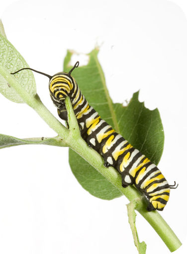
This caterpillar is busily munching its way through leaf after leaf. In fact, caterpillars do little more than eat, day and night. Like all living things, they need food to provide their cells with energy. The caterpillar will soon go through an amazing transformation to become a beautiful butterfly. These changes require a lot of energy.
Like this caterpillar and all other living things, you need energy to power everything you do. Whether it’s running a race or blinking an eye, it takes energy. In fact, every cell of your body constantly needs energy to carry out life processes. You probably know that you get energy from the food you eat, but where does food come from? How does it come to contain energy, and how do your cells get the energy from food? When you read this chapter, you will learn the answers to these questions.
Energy for Life
Lesson Objectives
-
State why living things need energy.
-
Describe how autotrophs and heterotrophs obtain energy.
-
Compare and contrast glucose and ATP.
-
Outline how living things make and use food.
Vocabulary
-
autotroph
-
cellular respiration
-
consumer
-
energy
-
food
-
glucose
-
heterotroph
-
photosynthesis
-
producer
Introduction
All living things need
energy
, which is defined as the ability to do work. You can often see energy at work in living things—a bird flies through the air, a firefly glows in the dark, a dog wags its tail. These are obvious ways that living things use energy, but living things constantly use energy in less obvious ways as well.
Why Living Things Need Energy
Inside every cell of all living things, energy is needed to carry out life processes. Energy is required to break down and build up molecules and to transport molecules across plasma membranes. All life’s work needs energy. A lot of energy is also simply lost to the environment as heat. The story of life is a story of energy flow—its capture, its change of form, its use for work, and its loss as heat. Energy, unlike matter, cannot be recycled, so organisms require a constant input of energy. Life runs on chemical energy. Where do living organisms get this chemical energy?
How Organisms Get Energy: Autotrophs and Heterotrophs
The chemical energy that organisms need comes from food.
Food
consists of organic molecules that store energy in their chemical bonds. In terms of obtaining food for energy, there are two types of organisms: autotrophs and heterotrophs.
Autotrophs
Autotrophs
are organisms that make their own food. Most autotrophs use the energy in sunlight to make food in a process called
photosynthesis
. Only three types of organisms—plants, algae, and some bacteria—can make food through photosynthesis. Examples of each type of photosynthetic organism are shown in
Figure
below
.
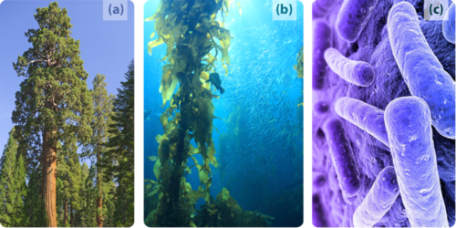
Photosynthetic autotrophs, which make food using the energy in sunlight, include (a) plants, (b) algae, and (c) certain bacteria.
Autotrophs are also called
producers
. They produce food not only for themselves but for all other living things as well (which are known as consumers). This is why autotrophs form the basis of food chains, such as the food chain shown in
Figure
below
.

A food chain shows how energy and matter flow from producers to consumers. Matter is recycled, but energy must keep flowing into the system. Where does this energy come from? (Though the Decomposers are shown as the final step in this food chain, these organisms decompose material from each step of the food chain. See the Ecology Concepts for additional information.)
Heterotrophs
Heterotrophs
are living things that cannot make their own food. Instead, they get their food by consuming other organisms, which is why they are also called
consumers
. They may consume autotrophs or other heterotrophs. Heterotrophs include all animals and fungi and many single-celled organisms. In
Figure
above
, all of the organisms are consumers except for the grass. What do you think would happen to consumers if all producers were to vanish from Earth?
Energy Molecules: Glucose and ATP
Organisms mainly use two types of molecules for chemical energy: glucose and ATP. Both molecules are used as fuels throughout the living world. Both molecules are also key players in the process of photosynthesis.
Glucose
Glucose
is a simple carbohydrate with the chemical formula C
6
H
12
O
6
. It stores chemical energy in a concentrated, stable form. In your body, glucose is the form of energy that is carried in your blood and taken up by each of your trillions of cells. Glucose is the end product of photosynthesis, and it is the nearly universal food for life.
ATP
ATP (adenosine triphosphate) is the energy-carrying molecule that cells use for energy. ATP is made during the first half of photosynthesis and then used for energy during the second half of photosynthesis, when glucose is made. It is also used for energy by cells for most other cellular processes. ATP releases energy when it gives up one of its three phosphate groups and changes to ADP (adenosine diphosphate [
two phosphates
]).
Why Organisms Need Both Glucose and ATP
Why do living things need glucose if ATP is the molecule that cells use for energy? Why don’t autotrophs just make ATP and be done with it? The answer is in the “packaging.” A molecule of glucose contains more chemical energy in a smaller “package” than a molecule of ATP. Glucose is also more stable than ATP. Therefore, glucose is better for storing and transporting energy. However, glucose is too powerful for cells to use. ATP, on the other hand, contains just the right amount of energy to power life processes within cells. For these reasons, both glucose and ATP are needed by living things.
A explanation of ATP as
biological energy
is found at
http://www.youtube.com/watch?v=YQfWiDlFEcA
.
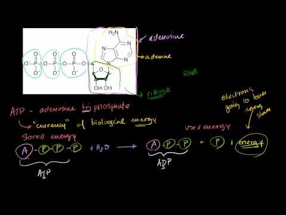
Click on the image above for more content
Making and Using Food
The flow of energy through living organisms begins with photosynthesis. This process stores energy from sunlight in the chemical bonds of glucose. By breaking the chemical bonds in glucose, cells release the stored energy and make the ATP they need. The process in which glucose is broken down and ATP is made is called
cellular respiration
. Photosynthesis and cellular respiration are like two sides of the same coin. This is apparent from
Figure
below
. The products of one process are the reactants of the other. Together, the two processes store and release energy in living organisms. The two processes also work together to recycle oxygen in Earth’s atmosphere.
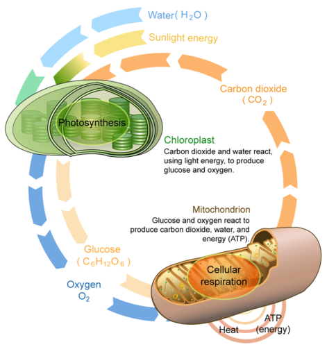
This diagram compares and contrasts photosynthesis and cellular respiration. It also shows how the two processes are related.
Photosynthesis
Photosynthesis is often considered to be the single most important life process on Earth. It changes light energy into chemical energy and also releases oxygen. Without photosynthesis, there would be no oxygen in the atmosphere. Photosynthesis involves many chemical reactions, but they can be summed up in a single chemical equation:
6CO
2
+ 6H
2
O + Light Energy → C
6
H
12
O
6
+ 6O
2
.
Photosynthetic autotrophs capture light energy from the sun and absorb carbon dioxide and water from their environment. Using the light energy, they combine the reactants to produce glucose and oxygen, which is a waste product. They store the glucose, usually as starch, and they release the oxygen into the atmosphere.
Cellular Respiration
Cellular respiration actually “burns” glucose for energy. However, it doesn’t produce light or intense heat as some other types of burning do. This is because it releases the energy in glucose slowly, in many small steps. It uses the energy that is released to form molecules of ATP. Cellular respiration involves many chemical reactions, which can be summed up with this chemical equation:
C
6
H
12
O
6
+ 6O
2
→ 6CO
2
+ 6H
2
O + Chemical Energy (in ATP)
Cellular respiration occurs in the cells of all living things. It takes place in the cells of both autotrophs and heterotrophs. All of them burn glucose to form ATP.
Lesson Summary
-
Living things need energy to carry out all life processes. They get energy from food.
-
Autotrophs make their own food. Heterotrophs get food by eating other living things.
-
Glucose and ATP are used for energy by nearly all living things. Glucose is used to store and transport energy, and ATP is used to power life processes inside cells.
-
Many autotrophs make food through the process of photosynthesis, in which light energy from the sun is changed to chemical energy that is stored in glucose. All organisms use cellular respiration to break down glucose, release its energy, and make ATP.
Lesson Review Questions
Recall
1. Define energy, and state where living things get the energy they need.
2. What is an autotroph? Give an example.
3. How does photosynthesis change energy?
4. How do heterotrophs obtain food?
Apply Concepts
5. ATP and glucose are both molecules that organisms use for energy. They are like the tank of a tanker truck that delivers gas to a gas station and the gas tank that holds the fuel for a car. Which molecule is like the tank of the delivery truck, and which is like the gas tank of the car? Explain your answer.
Think Critically
6. Compare and contrast photosynthesis and cellular respiration. Why are the processes like two sides of the same coin?
7. Explain why living things need both glucose and ATP.
8. Explain how living things recycle oxygen in Earth’s atmosphere.
Points to Consider
Living things must have chemical energy from food to power life processes. Most of the chemical energy in food comes ultimately from the energy in sunlight.
-
Do you know how the energy in sunlight is captured by plants and other photosynthetic autotrophs?
-
How do you think light energy changes to chemical energy during the process of photosynthesis?
-
Some producers live in places that do not receive sunlight. How do you think they make food?
Photosynthesis: Sugar as Food
Lesson Objectives
-
Outline the stages of photosynthesis.
-
Describe the chloroplast and its role in photosynthesis.
-
List the steps of the light reactions.
-
Describe the Calvin cycle.
-
Define chemosynthesis.
Vocabulary
-
Calvin cycle
-
chemosynthesis
-
chlorophyll
-
electron transport chain
-
grana
-
light reactions
-
photosystem
-
stroma
-
thylakoid membrane
Introduction
Plants and other autotrophs make food out of “thin air”—at least, they use carbon dioxide from the air to make food. Most food is made in the process of photosynthesis. This process provides more than 99% of the energy used by living things on Earth. Photosynthesis also supplies Earth’s atmosphere with oxygen.
An overview of photosynthesis is available at
http://www.youtube.com/watch?v=-rsYk4eCKnA
(13:37).
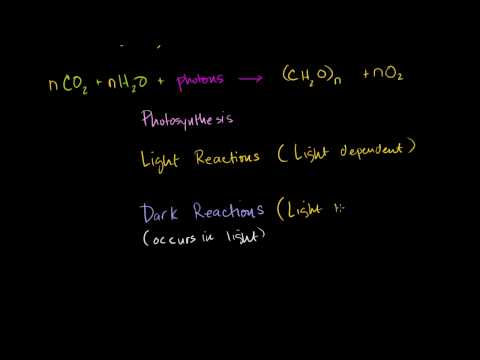
Click on the image above for more content
Stages of Photosynthesis
Photosynthesis occurs in two stages, which are shown in
Figure
below
.
-
Stage I is called the
light reactions
. This stage uses water and changes light energy from the sun into chemical energy stored in ATP and NADPH (another energy-carrying molecule). This stage also releases oxygen as a waste product.
-
Stage II is called the
Calvin cycle
. This stage combines carbon from carbon dioxide in the air and uses the chemical energy in ATP and NADPH to make glucose.
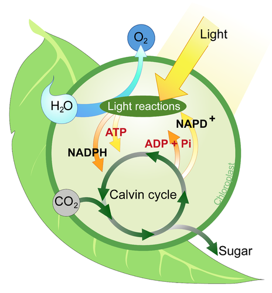
The two stages of photosynthesis are the light reactions and the Calvin cycle. Do you see how the two stages are related?
Before you read about these two stages of photosynthesis in greater detail, you need to know more about the chloroplast, where the two stages take place.
The Chloroplast: Theater for Photosynthesis
The “theater” where both stages of photosynthesis take place is the chloroplast. Chloroplasts are organelles that are found in the cells of plants and algae. (Photosynthetic bacteria do not have chloroplasts, but they contain structures similar to chloroplasts and produce food in the same way.) Look at the
Figure
below
. The figure is a high power microscopic photo of the upper part of a Winter Jasmine leaf. If you could look at a single leaf of this plant under a microscope, you would see small green ovals, like those shown. These small green ovals are chloroplasts.
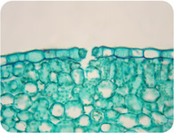
High power microscopic photo of the upper part of a Winter Jasmine leaf. Viewed under a microscope many green chloroplasts are visible.
Figure
below
shows the components of a chloroplast. Each chloroplast contains neat stacks called
grana
(singular, granum). The grana consist of sac-like membranes, known as
thylakoid membranes
. These membranes contain
photosystems
, which are groups of molecules that include
chlorophyll
, a green pigment. The light reactions of photosynthesis occur in the thylakoid membranes. The
stroma
is the space outside the thylakoid membranes. This is where the reactions of the Calvin cycle take place.
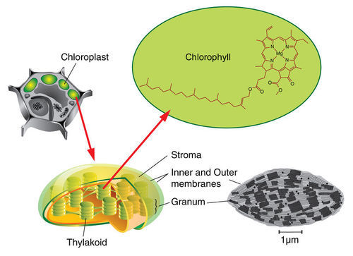
A chloroplast consists of thylakoid membranes surrounded by stroma. The thylakoid membranes contain molecules of the green pigment chlorophyll.
Photosynthesis Stage I: The Light Reactions
The first stage of photosynthesis is called the light reactions. During this stage, light is absorbed and transformed to chemical energy in the bonds of NADPH and ATP. You can follow the process in the figure as you read about it below.
Steps of the Light Reactions
The light reactions occur in several steps, all of which take place in the thylakoid membrane, as shown in
Figure
below
.
-
Step 1: Units of sunlight, called photons, strike a molecule of chlorophyll in photosystem II of the thylakoid membrane. The light energy is absorbed by two electrons (2 e
-
) in the chlorophyll molecule, giving them enough energy to leave the molecule.
-
Step 2: At the same time, enzymes in the thylakoid membrane use light energy to split apart a water molecule. This produces:
-
two electrons (2 e
-
). These electrons replace the two electrons that were lost from the chlorophyll molecule in Step 1.
-
an atom of oxygen (O). This atom combines with another oxygen atom to produce a molecule of oxygen gas (O
2
), which is released as a waste product.
-
two hydrogen ions (2 H
+
). The hydrogen ions, which are positively charged, are released inside the membrane in the thylakoid interior space.
-
Step 3: The two excited electrons from Step 1 contain a great deal of energy, so, like hot potatoes, they need something to carry them. They are carried by a series of electron-transport molecules, which make up an
electron transport chain
. The two electrons are passed from molecule to molecule down the chain. As this happens, their energy is captured and used to pump more hydrogen ions into the thylakoid interior space.
-
Step 4: When the two electrons reach photosystem I, they are no longer excited. Their energy has been captured and used, and they need more energy. They get energy from light, which is absorbed by chlorophyll in photosystem I. Then, the two re-energized electrons pass down another electron transport chain.
-
Step 5: Enzymes in the thylakoid membrane transfer the newly re-energized electrons to a compound called NADP
+
. Along with a hydrogen ion, this produces the energy-carrying molecule NADPH. This molecule is needed to make glucose in the Calvin cycle.
-
Step 6: By now, there is a greater concentration of hydrogen ions—and positive charge—in the thylakoid interior space. This difference in concentration and charge creates what is called a chemiosmotic gradient. It causes hydrogen ions to flow back across the thylakoid membrane to the stroma, where their concentration is lower. Like water flowing through a hole in a dam, the hydrogen ions have energy as they flow down the chemiosmotic gradient. The enzyme ATP synthase acts as a channel protein and helps the ions cross the membrane. ATP synthase also uses their energy to add a phosphate group (Pi) to a molecule of ADP, producing a molecule of ATP. The energy in ATP is needed for the Calvin cycle.

This figure shows the light reactions of photosynthesis. This stage of photosynthesis begins with photosystem II (so named because it was discovered after photosystem I). Find the two electrons (2 e
-
) in photosystem II, and then follow them through the electron transport chain to the formation of NADPH in Step 5. In Step 6, where do the hydrogen ions (H
+
) come from that help make ATP?
Summary of Stage I
By the time Step 6 is finished, energy from sunlight has been stored in chemical bonds of NADPH and ATP. Thus, light energy has been changed to chemical energy, and the first stage of photosynthesis is now complete.
For a more detailed discussion see
http://www.youtube.com/watch?v=GR2GA7chA_c
(20:16) and
http://www.youtube.com/watch?v=yfR36PMWegg
(18:51).
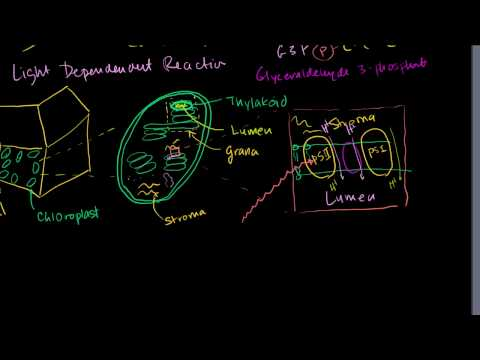
Click on the image above for more content
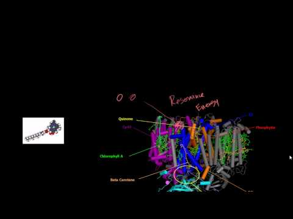
Click on the image above for more content
Photosynthesis Stage II: The Calvin Cycle
The second stage of photosynthesis takes place in the stroma surrounding the thylakoid membranes of the chloroplast. The reactions of this stage can occur without light, so they are sometimes called light-independent or dark reactions. This stage of photosynthesis is also known as the Calvin cycle because its reactions were discovered by a scientist named Melvin Calvin. He won a Nobel Prize in 1961 for this important discovery. In the Calvin cycle, chemical energy in NADPH and ATP from the light reactions is used to make glucose. You can follow the Calvin cycle in
Figure
below
as you read about it in this section. You can also watch an animation of the Calvin cycle at this link:
http://www.science.smith.edu/departments/Biology/Bio231/calvin.html
.

The Calvin cycle begins with a molecule named RuBP (a five-carbon sugar, Ribulose-1,5-bisphosphate) and uses the energy in ATP and NADPH from the light reactions. Follow the cycle to see what happens to all three of these molecules. Two turns of the cycle produce one molecule of glucose (called sucrose in the figure). In this diagram, each black dot represents a carbon atom. Keep track of what happens to the carbon atoms as the cycle proceeds.
Steps of the Calvin Cycle
The Calvin cycle has three major steps: carbon fixation, reduction, and regeneration. All three steps take place in the stroma of a chloroplast.
-
Step 1: Carbon Fixation. Carbon dioxide from the atmosphere combines with a simple, five-carbon compound called RuBP. This reaction occurs with the help of an enzyme named RuBisCo and produces molecules known as 3PG (a three-carbon compound, 3-Phosphoglyceric acid).
-
Step 2: Reduction. Molecules of 3PG (from Step 1) gain energy from ATP and NADPH (from the light reactions) and re-arrange themselves to form G3P (glycerate 3-phosphate). This molecule also has three carbon atoms, but it has more energy than 3PG. One of the G3P molecules goes on to form glucose, while the rest of the G3P molecules go on to Step 3.
-
Step 3: Regeneration. The remaining G3P molecules use energy from ATP to form RuBP, the five-carbon molecule that started the Calvin cycle. This allows the cycle to repeat.
Summary of Stage II
The Calvin cycle takes over where the light reactions end. It uses chemical energy stored in ATP and NADPH (from the light reactions) and carbon dioxide from the air to produce glucose, the molecule that virtually all organisms use for food.
The Calvin Cycle is discussed at
http://www.youtube.com/watch?v=slm6D2VEXYs
(13:28).
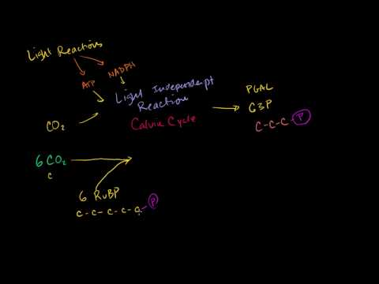
Click on the image above for more content
Chemosynthesis
Most autotrophs make food by photosynthesis, but this isn’t the only way that autotrophs produce food. Some bacteria make food by another process, which uses chemical energy instead of light energy. This process is called
chemosynthesis
. Some chemosynthetic bacteria live around deep-ocean vents known as “black smokers.” Compounds such as hydrogen sulfide, which flow out of the vents from Earth’s interior, are used by the bacteria for energy to make food. Consumers that depend on these bacteria to produce food for them include giant tube worms, like these pictured in
Figure
below
. Why do bacteria that live deep below the ocean’s surface rely on chemical compounds instead of sunlight for energy to make food?
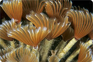
Tube worms deep in the Gulf of Mexico get their energy from chemosynthetic bacteria. The bacteria actually live inside the worms.
Lesson Summary
-
Most autotrophs make food using photosynthesis. This process occurs in two stages: the light reactions and the Calvin cycle.
-
Both stages of photosynthesis take place in chloroplasts. The light reactions take place in the thylakoid membranes, and the Calvin cycle takes place in the stroma.
-
The light reactions capture energy from sunlight, which they change to chemical energy that is stored in molecules of NADPH and ATP. The light reactions also release oxygen gas as a waste product.
-
The reactions of the Calvin cycle add carbon (from carbon dioxide in the atmosphere) to a simple five-carbon molecule called RuBP. These reactions use chemical energy from NADPH and ATP that were produced in the light reactions. The final product of the Calvin cycle is glucose.
-
Some bacterial autotrophs make food using chemosynthesis. This process uses chemical energy instead of light energy to produce food.
Lesson Review Questions
Recall
1. What are the stages of photosynthesis? Which stage occurs first?
2. Describe the chloroplast and its role in photosynthesis.
3. Summarize what happens during the light reactions of photosynthesis.
4. What happens during the carbon fixation step of the Calvin cycle?
5. During which stage of photosynthesis is glucose made?
Apply Concepts
6. The first living things appeared on Earth at least a billion years before photosynthetic organisms appeared. How might the earliest organisms have obtained energy before photosynthesis evolved? What process could they have used to make food?
Think Critically
7. Explain the role of the first electron transport chain in the formation of ATP during the light reactions of photosynthesis.
8. Explain what might happen if the third step of the Calvin cycle did not occur.
9. Plants release oxygen during the day but not during the night. Explain why.
Points to Consider
All living things need to break down glucose to make ATP for energy. Cellular respiration is the process in which this occurs.
-
How do you think cellular respiration occurs? What steps do you think might be involved?
-
How many molecules of ATP do you think cells get from a single molecule of glucose?
Powering the Cell: Cellular Respiration
Lesson Objectives
-
Name the three stages of cellular respiration.
-
Give an overview of glycolysis.
-
Explain why glycolysis probably evolved before the other stages of aerobic respiration.
-
Describe the mitochondrion and its role in aerobic respiration.
-
List the steps of the Krebs cycle, and identify its products.
-
Explain how electron transport results in many molecules of ATP.
-
State the possible number of ATP molecules that can result from aerobic respiration.
Vocabulary
-
aerobic respiration
-
anaerobic respiration
-
glycolysis
-
Krebs cycle
Introduction
You have just read how photosynthesis stores energy in glucose. How do living things make use of this stored energy? The answer is cellular respiration. This process releases the energy in glucose to make ATP, the molecule that powers all the work of cells.
An introduction to cellular respiration can be viewed at
http://www.youtube.com/watch?v=2f7YwCtHcgk
(14:19).
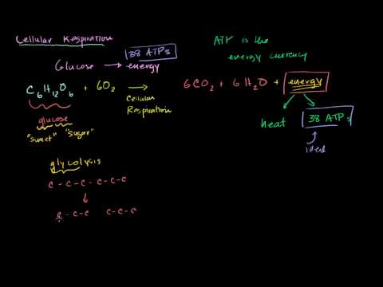
Click on the image above for more content
Stages of Cellular Respiration
Cellular respiration involves many chemical reactions. As you saw earlier, the reactions can be summed up in this equation:
C
6
H
12
O
6
+ 6O
2
→ 6CO
2
+ 6H
2
O + Chemical Energy (in ATP)
The reactions of cellular respiration can be grouped into three stages: glycolysis, the Krebs cycle (also called the citric acid cycle), and electron transport.
Figure
below
gives an overview of these three stages, which are also described below.
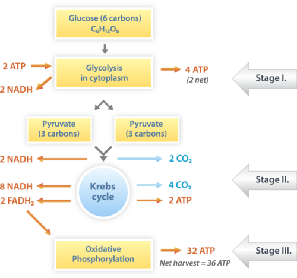
Cellular respiration takes place in the stages shown here. The process begins with a molecule of glucose, which has six carbon atoms. What happens to each of these atoms of carbon?
Cellular Respiration Stage I: Glycolysis
The first stage of cellular respiration is
glycolysis
. It takes place in the cytosol of the cytoplasm.
Splitting Glucose
The word
glycolysis
means “glucose splitting,” which is exactly what happens in this stage. Enzymes split a molecule of glucose into two molecules of pyruvate (also known as pyruvic acid). This occurs in several steps, as shown in
Figure
below
. You can watch an animation of the steps of glycolysis at the following link:
http://www.youtube.com/watch?v=6JGXayUyNVw
.
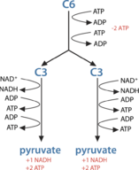
In glycolysis, glucose (C6) is split into two 3-carbon (C3) pyruvate molecules. This releases energy, which is transferred to ATP. How many ATP molecules are made during this stage of cellular respiration?
Results of Glycolysis
Energy is needed at the start of glycolysis to split the glucose molecule into two pyruvate molecules. These two molecules go on to stage II of cellular respiration. The energy to split glucose is provided by two molecules of ATP. As glycolysis proceeds, energy is released, and the energy is used to make four molecules of ATP. As a result, there is a net gain of two ATP molecules during glycolysis. During this stage, high-energy electrons are also transferred to molecules of NAD
+
to produce two molecules of NADH, another energy-carrying molecule. NADH is used in stage III of cellular respiration to make more ATP.
A summary of glycolysis can be viewed at
http://www.youtube.com/watch?v=FE2jfTXAJHg
.
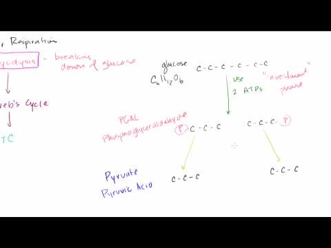
Click on the image above for more content
Anaerobic and Aerobic Respiration
Scientists think that glycolysis evolved before the other stages of cellular respiration. This is because the other stages need oxygen, whereas glycolysis does not, and there was no oxygen in Earth’s atmosphere when life first evolved about 3.5 to 4 billion years ago. Cellular respiration that proceeds without oxygen is called
anaerobic respiration
. Then, about 2 or 3 billion years ago, oxygen was gradually added to the atmosphere by early photosynthetic bacteria. After that, living things could use oxygen to break down glucose and make ATP. Today, most organisms make ATP with oxygen. They follow glycolysis with the Krebs cycle and electron transport to make more ATP than by glycolysis alone. Cellular respiration that proceeds in the presence of oxygen is called
aerobic respiration
.
Structure of the Mitochondrion: Key to Aerobic Respiration
Before you read about the last two stages of aerobic respiration, you need to know more about the mitochondrion, where these two stages take place. A diagram of a mitochondrion is shown in
Figure
below
.
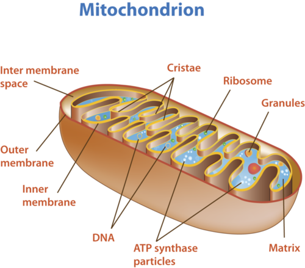
The structure of a mitochondrion is defined by an inner and outer membrane. This structure plays an important role in aerobic respiration.
As you can see from
Figure
above
, a mitochondrion has an inner and outer membrane. The space between the inner and outer membrane is called the intermembrane space. The space enclosed by the inner membrane is called the matrix. The second stage of cellular respiration, the Krebs cycle, takes place in the matrix. The third stage, electron transport, takes place on the inner membrane.
Cellular Respiration Stage II: The Krebs Cycle
Recall that glycolysis produces two molecules of pyruvate (pyruvic acid). These molecules enter the matrix of a mitochondrion, where they start the
Krebs cycle
. The reactions that occur next are shown in
Figure
below
. You can watch an animated version at this link:
http://www.youtube.com/watch?v=p-k0biO1DT8
.

The Krebs cycle starts with pyruvic acid from glycolysis. Each small circle in the diagram represents one carbon atom. For example, citric acid is a six carbon molecule, and OAA (oxaloacetate) is a four carbon molecule. Follow what happens to the carbon atoms as the cycle proceeds. In one turn through the cycle, how many molecules are produced of ATP? How many molecules of NADH and FADH
2
are produced?
Before the Krebs cycle begins, pyruvic acid, which has three carbon atoms, is split apart and combined with an enzyme known as CoA, which stands for coenzyme A. The product of this reaction is a two-carbon molecule called acetyl-CoA. The third carbon from pyruvic acid combines with oxygen to form carbon dioxide, which is released as a waste product. High-energy electrons are also released and captured in NADH.
Steps of the Krebs Cycle
The Krebs cycle itself actually begins when acetyl-CoA combines with a four-carbon molecule called OAA (oxaloacetate) (see
Figure
above
). This produces citric acid, which has six carbon atoms. This is why the Krebs cycle is also called the citric acid cycle. After citric acid forms, it goes through a series of reactions that release energy. The energy is captured in molecules of NADH, ATP, and FADH
2
, another energy-carrying compound. Carbon dioxide is also released as a waste product of these reactions. The final step of the Krebs cycle regenerates OAA, the molecule that began the Krebs cycle. This molecule is needed for the next turn through the cycle. Two turns are needed because glycolysis produces two pyruvic acid molecules when it splits glucose. Watch the OSU band present the Krebs cycle:
http://www.youtube.com/watch?v=FgXnH087JIk
.
Results of the Krebs Cycle
After the second turn through the Krebs cycle, the original glucose molecule has been broken down completely. All six of its carbon atoms have combined with oxygen to form carbon dioxide. The energy from its chemical bonds has been stored in a total of 16 energy-carrier molecules. These molecules are:
-
4 ATP (including 2 from glycolysis)
-
10 NADH (including 2 from glycolysis)
-
2 FADH
2
The Krebs cycle is reviewed at
http://www.youtube.com/watch?v=juM2ROSLWfw
.
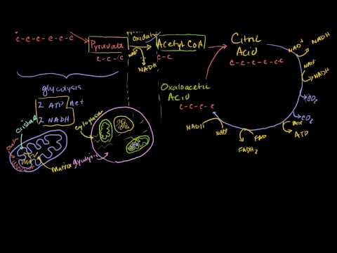
Click on the image above for more content
Cellular Respiration Stage III: Electron Transport
Electron transport is the final stage of aerobic respiration. In this stage, energy from NADH and FADH
2
, which result from the Krebs cycle, is transferred to ATP. Can you predict how this happens? (
Hint:
How does electron transport occur in photosynthesis?)
See
http://www.youtube.com/watch?v=1engJR_XWVU
for an overview of the electron transport chain.
Transporting Electrons
High-energy electrons are released from NADH and FADH
2
, and they move along electron transport chains, like those used in photosynthesis. The electron transport chains are on the inner membrane of the mitochondrion. As the high-energy electrons are transported along the chains, some of their energy is captured. This energy is used to pump hydrogen ions (from NADH and FADH
2
) across the inner membrane, from the matrix into the intermembrane space. Electron transport in a mitochondrion is shown in
Figure
below
.
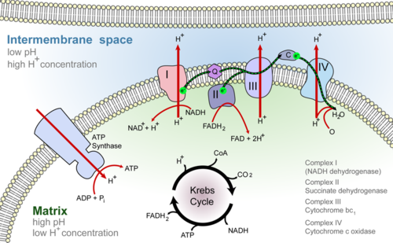
Electron-transport chains on the inner membrane of the mitochondrion carry out the last stage of cellular respiration.
Making ATP
The pumping of hydrogen ions across the inner membrane creates a greater concentration of the ions in the intermembrane space than in the matrix. This chemiosmotic gradient causes the ions to flow back across the membrane into the matrix, where their concentration is lower. ATP synthase acts as a channel protein, helping the hydrogen ions cross the membrane. It also acts as an enzyme, forming ATP from ADP and inorganic phosphate. After passing through the electron-transport chain, the “spent” electrons combine with oxygen to form water. This is why oxygen is needed; in the absence of oxygen, this process cannot occur. You can see how all these events occur at the following link:
http://www.sp.uconn.edu/~terry/images/anim/ATPmito.html
.
A summary of this process can be seen at the following sites:
http://www.youtube.com/watch?v=mfgCcFXUZRk
(17:16) and
http://www.youtube.com/watch?v=W_Q17tqw_7A
(4:59).
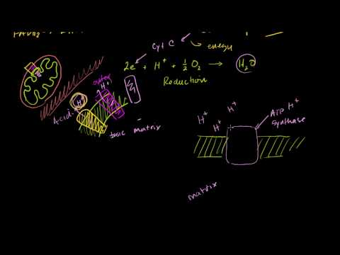
Click on the image above for more content
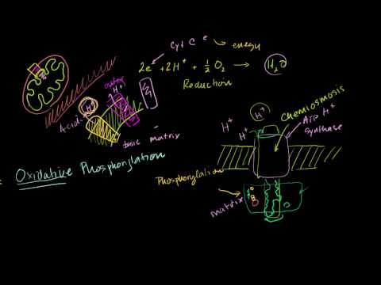
Click on the image above for more content
How Much ATP?
You have seen how the three stages of aerobic respiration use the energy in glucose to make ATP. How much ATP is produced in all three stages? Glycolysis produces 2 ATP molecules, and the Krebs cycle produces 2 more. Electron transport begins with several molecules of NADH and FADH
2
from the Krebs cycle and transfers their energy into as many as 34 more ATP molecules. All told, then, up to 38 molecules of ATP can be produced from just one molecule of glucose in the process of aerobic respiration.
Lesson Summary
-
Cellular respiration uses energy in glucose to make ATP. Aerobic (“oxygen-using”) respiration occurs in three stages: glycolysis, the Krebs cycle, and electron transport.
-
In glycolysis, glucose is split into two molecules of pyruvate. This results in a net gain of two ATP molecules.
-
Life first evolved in the absence of oxygen, and glycolysis does not require oxygen. Therefore, glycolysis was probably the earliest way of making ATP from glucose.
-
The Krebs cycle and electron transport occur in the mitochondria. The Krebs cycle takes place in the matrix, and electron transport takes place on the inner membrane.
-
During the Krebs cycle, pyruvate undergoes a series of reactions to produce two more molecules of ATP and also several molecules of NADH and FADH
2
.
-
During electron transport, energy from NADH and FADH
2
is used to make many more molecules of ATP.
-
In all three stages of aerobic respiration, up to 38 molecules of ATP may be produced from a single molecule of glucose.
Lesson Review Questions
Recall
1. List the stages of aerobic respiration in the order in which they occur.
2. Describe what happens during glycolysis. How many ATP molecules are gained during this stage?
3. Define aerobic and anaerobic respiration.
4. What role do mitochondria play in cellular respiration?
5. What are the products of the Krebs cycle?
6. What is the maximum number of ATP molecules that can be produced during the electron transport stage of aerobic respiration?
Apply Concepts
7. When you exhale onto a cold window pane, water vapor in your breath condenses on the glass. Where does the water vapor come from?
8. Assume that a new species of organism has been discovered. Scientists have observed its cells under a microscope and determined that they lack mitochondria. What type of cellular respiration would you predict that the new species uses? Explain your prediction.
Think Critically
9. Why do scientists think that glycolysis evolved before the other stages of cellular respiration?
10. Explain why two turns of the Krebs cycle are needed for each molecule of glucose.
Points to Consider
The last two stages of aerobic respiration require oxygen. However, not all organisms live in places where there is a plentiful supply of oxygen.
-
How do you think organisms get energy from glucose to make ATP if they cannot use oxygen?
-
Do they just use glycolysis, which produces only two ATP molecules? Or do you think there might be other steps involved?
Anaerobic Respiration
Lesson Objectives
-
Define fermentation.
-
Describe lactic acid fermentation and alcoholic fermentation.
-
Compare the advantages of aerobic and anaerobic respiration.
Vocabulary
-
alcoholic fermentation
-
fermentation
-
lactic acid fermentation
Introduction
Today, most living things use oxygen to make ATP from glucose. However, many living things can also make ATP without oxygen. This is true of some plants and fungi and also of many bacteria. These organisms use aerobic respiration when oxygen is present, but when oxygen is in short supply, they use anaerobic respiration instead. Certain bacteria can only use anaerobic respiration. In fact, they may not be able to survive at all in the presence of oxygen.
Fermentation
An important way of making ATP without oxygen is called
fermentation
. It involves glycolysis but not the other two stages of aerobic respiration. Many bacteria and yeasts carry out fermentation. People use these organisms to make yogurt, bread, wine, and biofuels. Human muscle cells also use fermentation. This occurs when muscle cells cannot get oxygen fast enough to meet their energy needs through aerobic respiration. There are two types of fermentation: lactic acid fermentation and alcoholic fermentation. Both types of fermentation are described below. You can also watch animations of both types at this link:
http://www.cst.cmich.edu/users/schul1te/animations/fermentation.swf
.
Lactic Acid Fermentation
In
lactic acid fermentation
, pyruvic acid from glycolysis changes to lactic acid. This is shown in
Figure
below
. In the process, NAD
+
forms from NADH. NAD
+
, in turn, lets glycolysis continue. This results in additional molecules of ATP. This type of fermentation is carried out by the bacteria in yogurt. It is also used by your own muscle cells when you work them hard and fast.
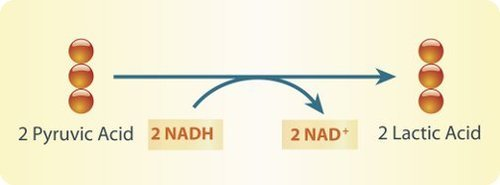
Lactic acid fermentation produces lactic acid and NAD
+
. The NAD
+
cycles back to allow glycolysis to continue so more ATP is made. Each circle represents a carbon atom.
Did you ever run a race and notice that your muscles feel tired and sore afterward? This is because your muscle cells used lactic acid fermentation for energy. This causes lactic acid to build up in the muscles. It is the buildup of lactic acid that makes the muscles feel tired and sore.
Alcoholic Fermentation
In
alcoholic fermentation
, pyruvic acid changes to alcohol and carbon dioxide. This is shown in
Figure
below
. NAD
+
also forms from NADH, allowing glycolysis to continue making ATP. This type of fermentation is carried out by yeasts and some bacteria. It is used to make bread, wine, and biofuels.
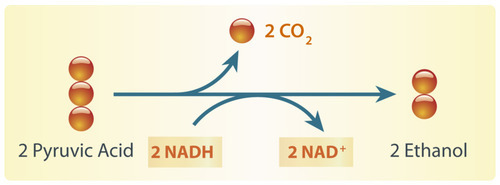
Alcoholic fermentation produces ethanol and NAD
+
. The NAD
+
allows glycolysis to continue making ATP.
Have your parents ever put corn in the gas tank of their car? They did if they used gas containing ethanol. Ethanol is produced by alcoholic fermentation of the glucose in corn or other plants. This type of fermentation also explains why bread dough rises. Yeasts in bread dough use alcoholic fermentation and produce carbon dioxide gas. The gas forms bubbles in the dough, which cause the dough to expand. The bubbles also leave small holes in the bread after it bakes, making the bread light and fluffy. Do you see the small holes in the slice of bread in
Figure
below
?
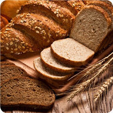
The small holes in bread are formed by bubbles of carbon dioxide gas. The gas was produced by alcoholic fermentation carried out by yeast.
Aerobic vs. Anaerobic Respiration: A Comparison
Aerobic respiration evolved after oxygen was added to Earth’s atmosphere. This type of respiration is useful today because the atmosphere is now 21% oxygen. However, some anaerobic organisms that evolved before the atmosphere contained oxygen have survived to the present. Therefore, anaerobic respiration must also have advantages.
Advantages of Aerobic Respiration
A major advantage of aerobic respiration is the amount of energy it releases. Without oxygen, organisms can just split glucose into two molecules of pyruvate. This releases only enough energy to make two ATP molecules. With oxygen, organisms can break down glucose all the way to carbon dioxide. This releases enough energy to produce up to 38 ATP molecules. Thus, aerobic respiration releases much more energy than anaerobic respiration. The amount of energy produced by aerobic respiration may explain why aerobic organisms came to dominate life on Earth. It may also explain how organisms were able to become multicellular and increase in size.
Advantages of Anaerobic Respiration
One advantage of anaerobic respiration is obvious. It lets organisms live in places where there is little or no oxygen. Such places include deep water, soil, and the digestive tracts of animals such as humans (see
Figure
below
).
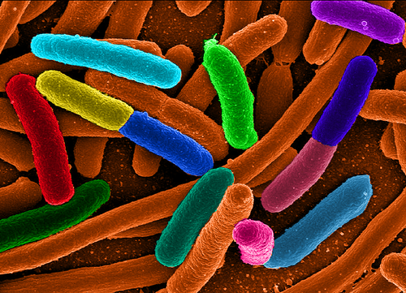
E. coli bacteria are anaerobic bacteria that live in the human digestive tract.
Another advantage of anaerobic respiration is its speed. It produces ATP very quickly. For example, it lets your muscles get the energy they need for short bursts of intense activity (see
Figure
below
). Aerobic respiration, on the other hand, produces ATP more slowly.
The muscles of these hurdlers need to use anaerobic respiration for energy. It gives them the energy they need for the short-term, intense activity of this sport.
Lesson Summary
-
Fermentation is a way of making ATP from glucose without oxygen. There are two types of fermentation: lactic acid fermentation and alcoholic fermentation.
-
Lactic acid fermentation changes pyruvic acid to lactic acid and forms NAD
+
. The NAD
+
allows glycolysis to continue so it can make more ATP.
-
Alcohol fermentation changes pyruvic acid to ethanol and carbon dioxide and forms NAD
+
. Again, the NAD
+
allows glycolysis to keep making ATP.
-
Aerobic respiration produces much more ATP than anaerobic respiration. However, anaerobic respiration occurs more quickly.
Lesson Review Questions
Recall
1. What is fermentation?
2. Name two types of fermentation.
3. What is the main advantage of aerobic respiration? Of anaerobic respiration?
4. What process produces fuel for motor vehicles from living plant products? What is the waste product of this process?
Apply Concepts
5. Tanya is on the high school track team and runs the 100-meter sprint. Marissa is on the cross-country team and runs 5-kilometer races. Explain which type of respiration the muscle cells in each runner’s legs use.
Think Critically
6. Compare and contrast lactic acid fermentation and alcoholic fermentation. Include examples of organisms that use each type of fermentation.
7. Explain why bread dough rises when it is set aside in a warm place.
Points to Consider
Two important functions of cells are making food and using it for energy. Photosynthesis and cellular respiration are the processes that carry out these functions. Other important functions of cells are growing and dividing.
-
Do you know how cells grow? What do you think controls the growth of cells?
-
How do you think cells divide? Do all cells divide in the same way?
Opening image copyright Jacob Hamblin, 2012.
http://www.shutterstock.com
. Used under license from Shutterstock.com.
References
-
(a) Image copyright Tom Grill, 2010; (b) Image copyright imageZebra, 2010; and (c) Image copyright Sebastian Kaulitzki, 2010.
http://www.shutterstock.com/
. Used under licenses from Shutterstock.com
-
CK-12 Foundation - Hana Zavadska and LadyofHats. . CC-BY-NC-SA 3.0
-
CK-12 Foundation - Hana Zavadska, LadyofHats. . CC-BY-NC-SA 3.0
-
CK-12 Foundation - Hana Zavadska and LadyofHats. . CC-BY-NC-SA 3.0
-
Image copyright Jubal Harshaw, 2011.
http://www.shutterstock.com
. Image used under license from Shutterstock.com
-
CK-12 Foundation. . CC-BY-NC-SA 3.0
-
CK-12 Foundation - Rupali Raju and Hana Zavadska and LadyofHats. . CC-BY-NC-SA 3.0
-
CK-12 Foundation - Zachary Wilson. . CC-BY-NC-SA 3.0
-
Image copyright John A. Anderson, 2010.
http://www.shutterstock.com/
. Used under license from Shutterstock.com
-
CK-12 Foundation - Hana Zavadska. . CC-BY-NC-SA 3.0
-
CK-12 Foundation - Hana Zavadska. . CC-BY-NC-SA 3.0
-
Image copyright Blamb, 2010; modified by CK-12 Foundation - Hana Zavadska.
http://www.shutterstock.com
. Used under license from Shutterstock.com
-
CK-12 Foundation - Hana Zavadska. . CC-BY-NC-SA 3.0
-
CK-12 Foundation - Zachary Wilson, based on image by Fvasconcellos (http://commons.wikimedia.org/wiki/File:Mitochondrial_electron_transport_chain%E2%80%94Etc4.svg) and Lady of Hats. . CC-BY-NC-SA 3.0
-
CK-12 Foundation - Hana Zavadska. . CC-BY-NC-SA 3.0
-
CK-12 Foundation - Hana Zavadska. . CC-BY-NC-SA 3.0
-
Image copyright Tischenko Irina, 2010.
http://www.shutterstock.com
. Used under license from Shutterstock.com
-
Mattosaurus.
http://commons.wikimedia.org/wiki/File:Diverse_e_Coli.png
. Public Domain
-
bikeriderlondon.
http://www.shutterstock.com/
. Used under license from Shutterstock.com
{kind=link}